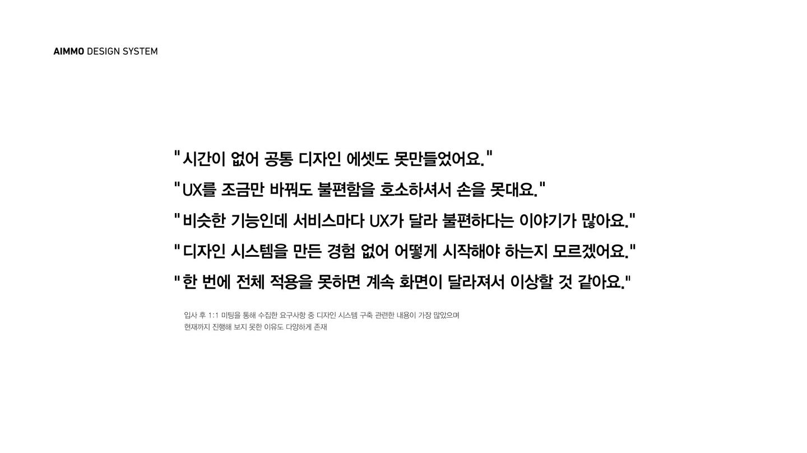
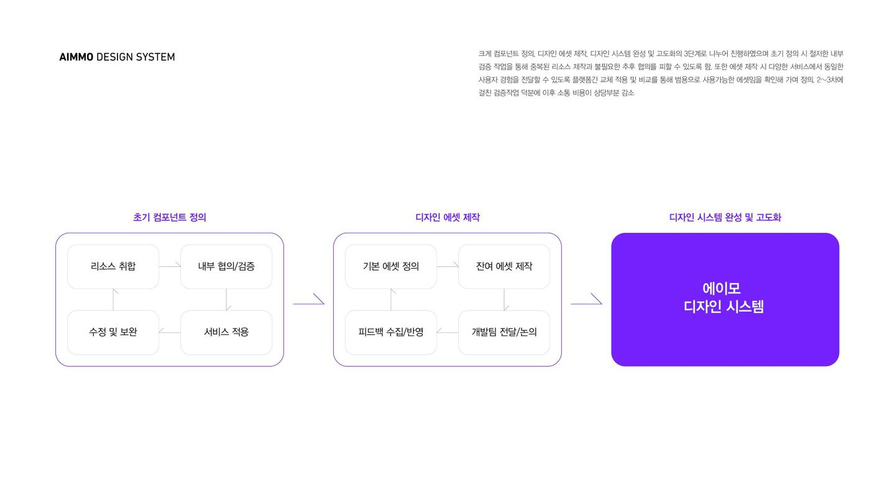
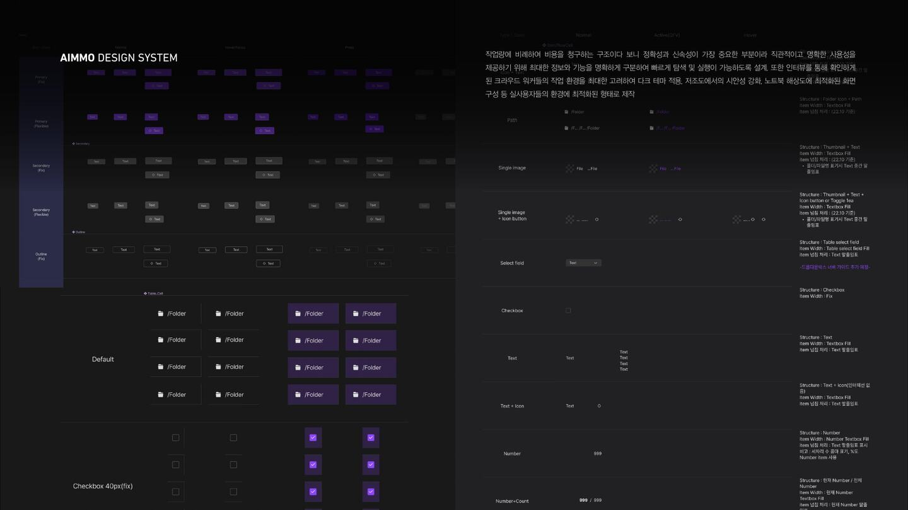
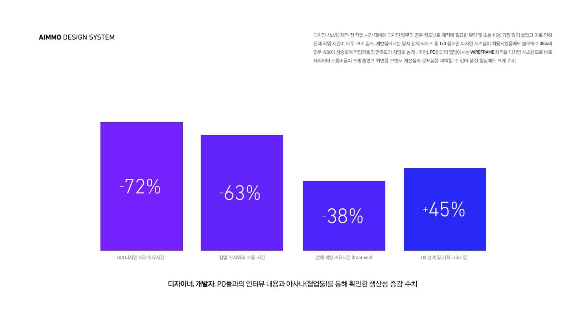

반복 업무를 줄이고,
판단을 재사용하는 시스템을 만들었습니다.
디자인 시스템부터 만들지 않았습니다. 실제 사용자와 업무 환경, 팀의 비효율을 먼저 파악한 뒤 가장 필요한 기준부터 순차적으로 구축했습니다.
01파악해 보니,
파악해 보니,
같은 일을 계속 반복하는 것이 더 큰 문제였습니다.
디자인·개발 모두 반복 생산이 일상이었고, 기준을 만들 경험과 시간, 전사적 공감대도 부족했습니다.
01.1 / TEAM VOICE입사 직후,
입사 직후,
팀의 목소리부터 확인했습니다.
가장 자주 반복된 이야기는 ‘시간이 없어 못 만들었다’, ‘어떻게 시작해야 할지 모르겠다’, ‘비슷한 기능인데 제품마다 다르다’였습니다.

SOURCE · 기존 포트폴리오 AIMMO DESIGN SYSTEM / 입사 후 1:1 미팅 요구사항
01.2 / WASTE CYCLE디자인과 개발 모두,
디자인과 개발 모두,
같은 결정을 반복하고 있었습니다.
UI를 다시 만들고, 개발에서 다시 구현하고, 협업 과정에서 다시 설명하고, 다음 제품에서 다시 반복하는 비효율적인 사이클이 지속됐습니다.
화면마다 다시 설계
기존 에셋을 찾기보다 매번 새 컴포넌트를 만들었습니다.
개발도 다시 구현
비슷한 기능이라도 제품별 UI가 달라 재사용하기 어려웠습니다.
설명과 확인 반복
공통 기준이 없어 화면마다 의도와 상태를 다시 맞춰야 했습니다.
다음 제품에서 다시 시작
업무 효율과 제품 일관성이 함께 떨어지는 구조였습니다.
01.3 / REFRAME목표를 시스템 제작이 아닌,
목표를 시스템 제작이 아닌,
반복 판단을 줄이는 것으로 바꿨습니다.
완성된 라이브러리보다 실제 제품에서 곧바로 효율을 만들 수 있는 기준을 먼저 정의했습니다.
FROM
각자가 다시 판단하고 다시 만드는 방식
→TO사용자·디자인·개발이 같은 기준을 재사용하는 방식
02만들기 전에,
만들기 전에,
실제 사용자의 일부터 관찰했습니다.
정확성과 속도가 곧 생산성으로 이어지는 작업이기 때문에 화면보다 업무 환경과 행동을 먼저 이해해야 했습니다.
02.1 / REAL CONTEXT직접 묻고,
직접 묻고,
옆에서 실제 업무를 관찰했습니다.
주로 어떤 환경에서 쓰는지, 조도는 어떤지, 한 번 작업을 시작하면 얼마나 오래 사용하는지 인터뷰하고 Shadow Tracking으로 작업 흐름을 관찰했습니다.


02.2 / PRODUCTIVITY CONTEXT사용성의 핵심은,
사용성의 핵심은,
빠르고 정확한 판단이었습니다.
작업 건수에 따라 수익이 달라지는 Crowd Worker 업무 특성상 탐색·판단·실행에 드는 시간을 줄이는 것이 중요했습니다.
사무실과 재택 환경
회사뿐 아니라 집에서 계약 형태로 장시간 작업하는 환경도 함께 고려했습니다.
오래 지속되는 작업
화면을 오래 바라보는 구간에서 불필요한 밝기와 장식을 줄였습니다.
빠른 상태 판단
행동·상태 컬러와 정보 위계를 명확히 해 다음 판단을 빠르게 이어가도록 했습니다.
시간당 처리 생산성
컴포넌트 수와 선택지를 줄여 탐색과 실행의 인지 부담을 낮췄습니다.
02.3 / EVIDENCE → DIRECTION관찰을 바탕으로,
관찰을 바탕으로,
다크 테마와 강한 대비를 선택했습니다.
‘다크 모드가 무조건 눈에 좋다’고 단정하지 않았습니다. 실제 저조도·장시간 사용 맥락과 화면 대비 연구를 보조 근거로 함께 사용했습니다.
DARK MODE
2024년 International Journal of Human–Computer Interaction의 실험에서는 일반 사무실 조도와 3 lx의 어두운 환경 모두에서 dark mode 조건의 시각 피로가 더 낮게 관찰됐습니다. 이를 실제 사용자 환경 관찰과 결합해 전체 luminance를 낮추는 방향의 근거로 사용했습니다.
COLOR CODING
시각 탐색 연구에서는 색상과 레이아웃이 반응시간과 정확도에 영향을 줄 수 있음을 보여줍니다. 그래서 상태·행동 컬러는 장식이 아니라 판단 속도를 돕는 정보 계층으로 사용하고, 일반 텍스트 대비는 WCAG의 접근성 기준을 함께 참고했습니다.
RESEARCH CONTEXT · Xie et al., 2024, Effects of Screen Color Mode and Color Temperature on Visual Fatigue · Frontiers in Psychology, 2022, Color Coding and Visual Search
03관찰한 조건을,
관찰한 조건을,
실제 시스템으로 옮겼습니다.
팀의 현업을 멈추지 않으면서 가장 자주 쓰는 컴포넌트부터 줄이고, 같은 제품군이 하나의 패밀리로 느껴지게 만들었습니다.
03.1 / PARALLEL OWNERSHIP파트를 나누고,
파트를 나누고,
각자의 오너십을 만들었습니다.
제가 전부 만드는 대신 팀원별로 담당 영역을 정하고, 코어 컴포넌트와 컬러·그래픽은 직접 참여해 방향과 품질 기준을 함께 잡았습니다.
폰트 위계와 텍스트 규칙
상태와 행동 컬러 체계
그래픽 스타일과 표현 기준
코어 컴포넌트와 상태 정의
개발과 공유할 공통 값
03.2 / REDUCE & PRIORITIZE컴포넌트 종류를,
컴포넌트 종류를,
30% 이상 줄였습니다.
가장 자주 사용하는 패턴을 중심으로 겹치는 버튼·상태·선택 방식을 통합하고, SaaS에 한 번에 적용할 수 없다는 현실을 고려해 Core First 방식으로 순차 전환했습니다.
30%+
COMPONENT TYPES REDUCED
선택지를 줄여 디자이너와 개발자가 더 빠르게 같은 답을 찾도록 했습니다.
기존 리소스 전수 수집
반복 사용 빈도 파악
가장 많이 쓰는 것부터 적용
라이브 제품에 순차 확장
03.3 / FAMILY SYSTEM같은 제품군으로 보이되,
같은 제품군으로 보이되,
각 제품은 구분되게 했습니다.
공통 구조·컴포넌트·컬러 체계는 공유하고, 제품별 목적에 따라 일부 강조색과 컴포넌트 특성을 다르게 조합했습니다.
같은 구조
동일 기능은 같은 UX와 컴포넌트를 사용했습니다.
같은 컬러 시스템
공통 토큰과 상태 체계로 하나의 제품군 인상을 만들었습니다.
제품별 차별화
일부 강조색과 핵심 컴포넌트 특성을 다르게 조합했습니다.
2~3개 제품 패키지
함께 사용할 때도 학습 비용이 다시 생기지 않도록 연결했습니다.
03.4 / DEVELOPMENT디자인에서 끝내지 않고,
디자인에서 끝내지 않고,
개발까지 같은 기준으로 연결했습니다.
지속적인 미팅과 인터뷰로 막히는 지점을 확인하고 부족한 정의를 빠르게 보완했습니다.
실제 개발 과정의 부족한 지점을 확인했습니다.
디자인 정의와 구현 사이의 차이를 빠르게 수집했습니다.
재사용 가능한 구조로 라이브러리화했습니다.
같은 기능을 다시 만드는 비용을 줄였습니다.
공통 값을 토큰으로 연결했습니다.
디자인과 개발이 같은 기준을 바라보게 했습니다.
04시스템 적용 후,
시스템 적용 후,
반복 업무 시간이 줄었습니다.
결과는 화면의 통일이 아니라 생산성과 판단 시간의 변화로 확인했습니다.
04.1 / PRODUCTIVITY일부 적용만으로도,
일부 적용만으로도,
업무 효율이 달라졌습니다.
디자이너·개발자·PO 인터뷰와 Asana를 통해 제작 전후의 생산성 변화를 확인했습니다.
GUI 디자인 제작 소요시간
컴포넌트 확인과 반복 제작 비용이 크게 줄었습니다.
협업 부서와의 소통 시간
공통 화면 기준으로 설명과 재확인 비용이 감소했습니다.
Front-end 개발 소요시간
전체 리소스 약 1/3 적용 단계에서도 개발 효율이 개선됐습니다.
UX 설계·기획 고려시간
반복 UI보다 사용자 경험과 문제 해결에 더 많은 시간을 쓸 수 있었습니다.

SOURCE · 기존 포트폴리오 / 디자이너·개발자·PO 인터뷰 및 Asana 생산성 변화 수치
04.2 / EXTERNAL CONTEXT내부 성과는,
내부 성과는,
업계 연구와도 같은 방향이었습니다.
외부 연구는 에이모 수치의 대체값이 아니라, 재사용 가능한 UI 구조가 왜 생산성을 높이는지 설명하는 보조 근거로 사용했습니다.
2016년 International Journal of Human-Computer Studies 사례에서는 UI specification 요소의 40% 이상을 재사용했고 specification size가 55% 감소했습니다.
2025년 design-system 연구는 재사용 컴포넌트와 디자인 토큰이 중복 구현을 줄이고 frontend delivery와 협업을 개선하는 방향의 결과를 보고했습니다.
RESEARCH CONTEXT · Reusing UI elements with Model-Based UI Development, 2016 · Measuring the Impact of Design Systems on Frontend Delivery Speed, Defect Rates and Team Alignment, 2025
04.3 / LEAD IMPACT결국 만든 것은,
결국 만든 것은,
팀의 판단과 실행을 돕는 업무 시스템이었습니다.
팀이 처음 해보는 시스템이었지만 문제를 먼저 정의하고, 실제 사용환경을 확인하고, 실행 가능한 범위부터 밀어붙여 생산성과 품질을 동시에 개선했습니다.
DESIGN SYSTEM → PRODUCTIVITY SYSTEM
UX Design Lead의 역할은 화면을 통일하는 것이 아니라,
팀이 더 적은 반복으로 더 좋은 판단을 하게 만드는 구조를 만드는 것이라고 보았습니다.